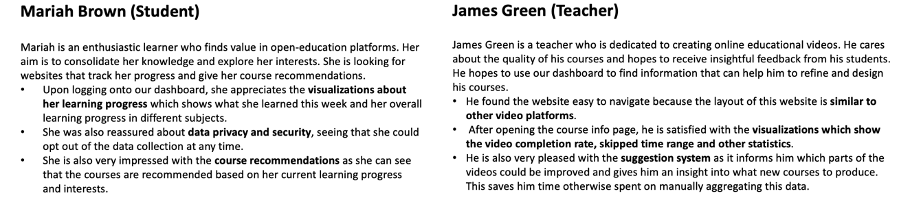
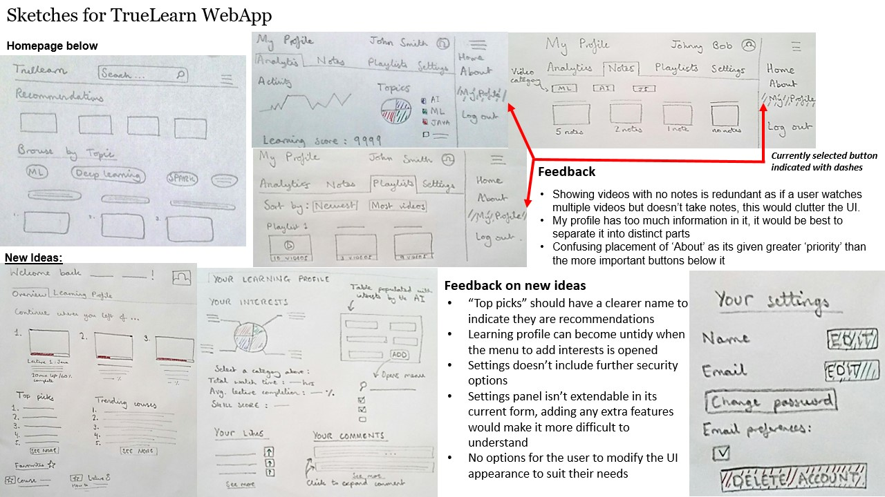

10 October 2022
During the first week, the team members introduced themselves to each other and began discussing our project's content. Our project focused on developing a python library TrueLearn from the available algorithm logic and creating a dashboard to visualize the parameters of the algorithm.
We were introduced to the concept of Human-Computer Interaction (HCI). We spent two weeks learning about:
To learn more about our project, we did some research on the project initiators and the project itself.
We went through Knowledge4All website, learned about their mission and some of their ongoing projects, and discovered some of their products such as videolectures.net and their relationship with x5gon organization.
We then investigated what the family of the TrueLearn algorithm is. We found out that it is a set of algorithms that builds a knowledge model of the user from implicit data generated by the users. The knowledge model built from the library can be an important part of an educational recommendation system.
These background studies gave us some high-level overviews of the project.
24 October 2022
As we are building a library and a list of different visualizations around the library, we decided to focus on the visualizations side of the project for our HCI assignment which requires us to “design and evaluate a prototype for [our] software system.”
In the first week, we spoke to our potential users to better understand their needs. We discussed some of their requirements, their experiences and pain points of using the existing platform, and their expectations of the new platform. Based on these interviews, we collected two sample responses from our targeted users (students and teachers) and put the responses in our assignment.
Based on the gathered requirement, we try to represent our users more systematically by identifying their goals, motivations, pain points, and characteristics. Using the attributes that we identified, we created personas for teachers and students and conceptualized how they would use our products in some scenarios.

In response to the pain points, we gathered from our users, we started working on the design of our sketches. We worked on two versions of the design, analyzed the strengths and weaknesses of our design based on the feedback collected from users and improved them.

Before the first meeting, we put together a list of questions to ask the client, covering the following areas:
After we had completed our meetings with the client, we had a basic understanding of the following concepts:
The functionalities, input, and output of the TrueLearn algorithms
How the input data is collected and pre-processed
Background information about the Python library and its potential users
What kind of visualization needs to be created and who are the users of the visualization
7 November 2022
After we had finished our sketches, we started making our prototype of the visualization dashboard. We used Balsamiq to draw our prototype and separated our prototype into two parts: prototype for students and prototype for teachers.

Considering our limited amount of time after making our prototype, we chose to perform heuristic evaluations based on 10 Usability Heuristics for User Interface Design proposed by Jakob Nielsen. Based on the 10 metrics, we identified the following problems in our prototype:
| # | Heuristic | Problem | Solution | Severity |
|---|---|---|---|---|
| 1 | Visibility of system status | There is no text indicating the meaning of each diagram on the analytics page for both teacher and student. | Each diagram in analytics should be grouped into categories with a subtitle indicating their meaning and text explaining what they are showing. | 4 |
| 2 | Visibility of system status | It is not clear to the user how to open the various sub-sections of the “My Profile” and “My Content” in the sidebar. | Add an icon to indicate that the sub-sections can be opened by clicking the icon. | 2 |
| 3 | Visibility of system status | Courses in the video uploaded tab should be labelled with name. | Add the course name below each picture. | 2 |
| 4 | Aesthetic and minimalist design | The topics in the home and history pages are scattered over many rows at the top. | Topics can be grouped in a carousel so that they are not spread over multiple rows. | 1 |
| 5 | Consistency and standards | In the teacher’s dashboard, there are two “Analytics” which might be confusing for the user. | Rename user profile “analytics” to “my progress” and rename teacher “analytics” to Content insights. | 2 |
We immediately performed a round of iterations on the prototype that solved the above problem.
During these two weeks, we had a second meeting with the client. This meeting focused on how we write our literature reviews and understand the technical details of the library and visualizations.
For the literature review, after a discussion with the client, we decided to split the whole report into two parts: python library and visualizations, and to research similar projects and technologies for each part.
For the python library, we briefly discussed the mechanism behind the TrueLearn algorithm, Bayesian knowledge tracing. At the same time, the client told us that we could go and learn how pyBKT, a project that is like TrueLearn is implemented.
For the visualizations, the client introduced us to the open learner model, encouraging us to read about what types of visualizations are available and how each motivates learners. In addition, the client envisaged us building some dynamic visualizations via React, as this could be easily integrated into their existing video platform x5learn. He also presented some libraries for building the visualizations, including D3.js.
21 November 2022
This fortnight we have been investigating the tools needed to develop python libraries and visualizations.
From the perspective of building a library that is easy for developers to use and learn, we believe that the python library should:
For each of these objectives, we have investigated the tools available. For the documentation, we looked at Sphinx, pdoc, and pydoctor, comparing them based on their functionalities, ease of use, and the UI (User Interface) for the output and finally choosing Sphinx as our documentation generation tool. For testing, we focused on unit testing, doc testing, and generating test coverage. Our motivation to deploy these testing methods drives us to select pytest as our testing framework as it is easy to use and supports additional features via plugin systems and coverage.py as our test coverage report generator as it is way more powerful than its alternative trace. Regarding linters and formatters, we ended up choosing Prospector over PyLint and Flake8 because it integrates the most publicly available python linters and supports out-of-the-box use.
From the point of view of our target users, we believe that visualization should provide the richest possible information in both a static and dynamic way. So, we looked at static and dynamic visualization separately. We ended up choosing several libraries for comparison:
| WHERE/VISUALIZATION TYPES | Static | Dynamic |
|---|---|---|
| Front-end | D3.js and Chart.js | D3.js and Chart.js |
| Back-end | matplotlib, seaborn, plotly | plotly |
In terms of ease of development, Plotly is the winner at the end of the day, as it supports us in both static and dynamic visual generation on the back end. So, we decided to choose it as the library for the back-end visualization. For the front end, Chart.js is a bit weaker than D3.js, despite its ability to integrate better with React. So, from a functional point of view, we decided to use D3.js for the development of the front-end visualization.
We were also informed by our client during this week’s meeting that the the library should be extensible, meaning that it is easy for other developers to add more features to the library and integrate the library into their system. He suggested we read the paper API design for machine learning software: experiences from the scikit-learn project written by the developers of scikit-learn.
After the last meeting with the client, we started to build a MoSCoW list to refine some of the requirements for our project. We divided the requirements into functional requirements and non-functional requirements. Inside functional requirements, we listed different requirements for
Inside non-functional requirements, we focused on usability, compatibility, maintainability, and performance as we need to ensure our library and visualization are accessible and can be easily used by the targeted users.
We decided to have a conversation with the client next week and finalize the requirements at the end of this term.
During these two weeks, we also had preliminary planning of the project and completed the first two parts of the Gant chart:
5 December 2022
During these two weeks, we discussed our requirements with our client, who gave us some advice, such as:
Following these suggestions, we finalize our requirements and publish the requirement on the project website.
After the last meeting, we read about how scikit-learn designed their API and used this as a basis for designing TrueLearn's API. We expect our API to follow the same principles used in scikit-learn:
Implementing these principles in scikit-learn relies on the use of the estimator, predictor, and transformer interfaces, which we decided to deploy in the TrueLearn library. This design allows us to reduce the learning cost of the user and makes TrueLearn easier to extend, maintain and use.
Combining our API design with the final requirements, we finalized our system design as the following:
9 January 2023
After agreeing on the project's criteria and deliverables in the previous term the focus has now shifted to the development of the TrueLearn library. The project can be split into two distinct components:
After gathering the necessary files for the project, we began to start developing our workflow to make development more efficient. This namely involved setting up GitHub actions to automatically run certain tests and checks on our repositories code. The checks that we wanted were three:
All the above have been set up to run on certain triggers (i.e., events), and the reports produced are integrated directly into GitHub for easy access.
Check status is automatically updated and available on the repository's ‘homepage.’
Errors are formatted using GitHub checks API
Moving forward, we aim to make our proposed plan concrete, detailing how we would refactor the existing code. One element we have discussed is the use of interfaces to define shared behaviour between the AI models which are used to provide these recommendations. However, this would constrain future development of the project to use this specific interface. Another approach used already by an existing learner-focused AI library scikit-learn is to use the programming paradigm of duck typing. This more flexible approach allows developers to add functionalities to the model without worrying about interface constraints.
In terms of the visualisations, we plan to determine what the 3 key visualisations are and what data structures we can use to represent that data that we would like to model.
In terms of general design, we have proposed a first version of the 'truelearn' package structure and structured it as shown below:
bayesian_models: contains all the classifiers that we
need to implement: knowledge, novel, interest, and INK (meta
classifier)preprocessing: contains the Wikifier code that uses
Wikifier API to extract top-n topics from some given textsunit_tests: contains all the unit tests of the
packagevisualisations: contains the visualization codeIn preparation for the upcoming elevator pitch, the group prepared two online meetings to discuss the script, design the PowerPoint, and rehearse. We ended up with the following design.
23 January 2023
Before we started implementing the library, we had another meeting with the client to discuss how to structure truelearn as we felt that the current design was too simple to accommodate some of the “could have” features we wanted to implement.
In terms of library structure, we discuss several points during the meeting:
learning instead of
bayesian_modelsmodels which contain the user model and event model.As a result of the design considerations above, we finalized our package structure:
truelearn/learning: contains all the classifiers.truelearn/models: contains the implementation of the
learner model and event model.truelearn/preprocessing: contains the pre-processing
function, such as wikifier.truelearn/util: contains some utility
sub-packages.metrics: contains methods to calculate precision,
accuracy, recall, and f1 score.
visualizations: contains methods to visualize learner
models. It supports bar charts, line charts, pie charts, bubble charts,
etc.truelearn/tests: contains unit tests for each package
shown above.You can refer to PR #5, #8 for more details.
We start our first step of refactoring at #9.
In this PR, we implement the first three baseline classifiers presented in the TrueLearn paper: EngageClassifier (always predict that learner will engage with the given event), PersistentClassifier (predict based on the last label), MajorityClassifier (predict engagement if the number of engagements is greater than the number of non-engagements).
To make our API easy to use, we add type hints to our methods return
type and plan to add type hints to the parameter after we finalized the
implementation of the learner model. We encountered some problems when
we added type hints for the return value of the instance methods, as we
needed to annotate the return type to the class itself (fit
method). We initially used the quotation as a workaround to wrap the
return type to support Python 3.6+. However, after a discussion with the
client, we decided only to support Python 3.7+ as Python 3.6 is
end-of-life, which allows us to import something from
__future__ to resolve this problem.
from __future__ import annotationsWe then started a long journey of exploring the implementation of the learner model.
Initially, we are switching back and forth between two different
implementations that use the four classes: Topic,
KnowledgeComponent, Knowledge, and
LearnerModel.
You can refer to #10 for more details. We discuss
how we should implement __repr__ and __hash__
of Topic, how we should store the mapping (should we use
Topic or other ways of mapping), how different ways of
mapping potentially affect the usability of other components in our
library (visualization).
After some discussions among the team and the client, we decided to switch to the following design:
AbstractKnowledgeComponent defines an abstract
interface that can be inherited by developers to implement their
knowledge components.KnowledgeComponent represents a knowledge component in
the learning process. It contains information about the mean, variance,
title, description and URL of the knowledge component.Knowledge stores a dictionary mapping a
Hashable type (e.g. topic id) to
KnowledgeComponent.LearnerModel stores the Knowledge.Based on the learner model, we implement our first version of
KnowledgeClassifier and fix all the type hints for the
parameters. Now, x in fit and
predict is of type Knowledge.
Now, all the classifiers have the following public APIs:
fit(x: Knowledge, y: bool): train the classifier by
using the knowledge of the learnable unit (x) and a label (y) that
indicates whether the learner engages with the learnable unit.predict(x: Knowledge): predict (output
True/False) whether the learner will engage with the
learnable unit represented by the knowledge.predict_proba(x: Knowledge): predict (output
probability between 0-1) whether the learner will engage with the
learnable unit represented by the knowledge.get_params(): return the parameters of the classifier
in the dictionary (name => value)
For EngageClassifier, this returns an empty
dictionary.
For PersistClassifier, this returns a dictionary
with only one key-value pair, storing whether the learner engages with
the last Knowledge.
For MajorityClassifier, this returns a dictionary
with two key-value pairs, storing the number of engagements and
non-engagements.
For KnowledgeClassifier, this returns a dictionary
like this:
{
"threshold": self.__threshold,
"init_skill": self.__init_skill,
"def_var": self.__def_var,
"beta": self.__beta,
"positive_only": self.__positive_only
}A note from the future: currently, you may notice
KnowledgeClassifier is not very customizable and powerful
(e.g. lack of public methods to set parameters). However, we will
gradually enhance these APIs and add more public methods as we move
towards implementing all of the classifiers.
6 February 2023
While implementing the model and classifier, we also started to implement the wikifier API.
The main functionality of the Wikifier is to request API
provided by Wikifier and convert the
returned JSON to a list of topics represented by a dictionary containing
keys like title, URL, cosine, PageRank and id.
As we need to parse the JSON and convert it to our data structure, we
need a library to load it. For this, we experiment with the Python
standard json library, UltraJSON, orjson and python-rapidjson.
Based on our experimentation, orjson is the best among these four, about
10x faster than json in Python standard library.
In #13, we implement all the classifiers, finishing 10+ listed tasks.
This request aims to implement NoveltyClassifier, InterestClassifier and INKClassifier and to refactor the structure of the library.
The following steps are required to complete this pull request:
- Augment LearnerModel: include engagement data to help the impl of draw probability. Currently, the impl is incorrect.
- Augment Abstract/KnowledgeComponent: include timestamps for the impl of interests.
- Create an EventModel => record the knowledge representation of the learnable unit and the timestamp when the learning event happens (useful in interests)
- Create BaseClassifier (define abstract methods) and common base class for Knowledge, Novelty, and Interest Classifier as they share many helper methods
- Fix the draw probability implementation
- Implement NoveltyClassifier
- Implement InterestClassifier
- Utilize BaseClassifier for type checking
- Implement INKClassifier
There are some non-functional refactorings to make our library better:
- Use
@dataclassto implementLearnerModelandEventModel- Extract some methods from the class hierarchy and make them free functions (e.g.
team_sum_quality,select_topic_kc_pairs). These methods are not closely related to the internal state of the classifier, nor are they part of the classifier’s behaviour.- Remove the default argument in
InterestNoveltyKnowledgeBaseClassifier. The default should be set in the base class.- Use keyword arguments to make AbstractKnowledgeComponent difficult to use incorrectly
- Include the
typing_extensionpackage (its support of types likeSelfandFinalis beneficial to the library impl) and rewrite some of the type hints- Remove
AbstractKnowledgeand only keepAbstractKnowledgeComponent.- Switch to google style docstring as it’s easier to write and read. (Don’t need to write
-------and Don’t need to maintain the type information.)
In summary, the main achievements of this PR include:
truelearn.learning
NoveltyClassifier,
InterestClassifier and INKClassifier.BaseClassifier and implement type-based
constraint checking validate_params(),
get_params() and set_params() in itInterestNoveltyKnowledgeBaseClassifier
that implements the shared methods used by the three classifiers.truelearn.models
InterestClassifier and INKClassifier.Knowledge that represents the learnable
unit with an EventModel that models a learning event. In
the event model, we store the timestamp when the event happened. This
timestamp is used in InterestClassifier and
INKClassifier.@dataclasstyping_extension to our dependencies as it brings
more type from later Python versions to Python 3.7
(i.e. Self and Final).|, tuple and dict.There are also some discussions around the type of hints and private/public variables. You could find them in the PR.
We implement the following metrics:
get_precision_scoreget_recall_scoreget_accuracy_scoreget_f1_scoreThese functions are implemented by importing and re-exporting the
scikit-learn library. We have included it as part of the
truelearn package because we envisage the need to add more
metrics here in the future.
As we progressed on classifiers and models, we felt we needed to provide some ways for developers to experiment with different classifiers.
We intend to provide APIs that mimic those in scikit-learn. The dataset we use is PEEK-Dataset, which is described in this paper and hosted here.
We provide two methods load_peek_dataset() and
load_peek_dataset_raw() to load the PEEK dataset in
parsed/raw format.
To implement these two methods, we initially wanted to include these datasets inside our package, like some of the datasets in scikit-learn. However, we soon realised that this was not feasible as the dataset was over 30M. Including this non-essential resource would have inflated our package and taken the users longer to download it.
We have therefore implemented a basic downloader that can download
PEEK datasets and validate their sha256sum. Users can use it to download
datasets as needed. It also provides a cache ability: when you call
load_peek_dataset/_raw() multiple times, the data will only
be downloaded once.
When implementing the truelearn.datasets, we also made a
PR to the upstream PEEK-Dataset. The motivation for this PR is to add
some additional information (i.e. title and description) for each topic.
Adding this information to the mapping gives us more choices when
implementing the visualization.
We implemented a crawler using Python to fetch the title from the URL
in the PEEK-dataset mapping and then use the fetched title to request
another Wikipedia API
(https://en.wikipedia.org/w/rest.php/v1/search/title?q={title}&limit=10)
to get the relevant description.
We processed 30366 URLs in the dataset and discovered something interesting about Wikipedia and the first version of the dataset. We will present them briefly below:
The limit in the API that provides the description
is not simply a limit on the length of the data. Sometimes, you will
find that the first results of limit=1 and
limit=10 are different, and the latter is more accurate.
This is probably related to some voting algorithm (like KNN).
In Wikipedia, many topics lack descriptions.
Wikipedia and Wikimedia, though both hosted by the Wikimedia Foundation, provide different descriptions of the same topics.
Some topics (their id shown below) are deleted from Wikipedia for various reasons (lack of evidence, promotion, etc.):
broken_links = [
"1256",
"3203",
"4924",
"6057",
"8543",
"13172",
"16347",
"20258",
"25968",
]From the future: after the upstream merged the changes, we utilized the title and description in our implementation (#27).
As we already have the docstrings in the source files, we started to implement some CIs to build documentation automatically for each new commit/release.
We used Sphinx to automatically generate documentation based on some
pre-generated templates and the docstrings in the source files. In
#14, we set up a basic template at
docs.
Later, after discussing with the client, we decided to switch to the
state-of-art documentation-hosting platform readthedocs and
set up configurations in readthedocs.yaml. (This is still
Work In Progress).
Based on the discussion #32, we decided to make Github Annotations available only when the tests/linting failed, which reduces the number of checks shown when all the tests are successful.
Also, CI caching is enabled for static analysis, unit testing and code coverage. It reduces the time to install the dependencies every time we run these actions.
prospector.yml is slightly adjusted to reflect the
changes in #13, where we implemented the classifiers.
We limit the line length to 88 and exclude some checkings in
pydocstyle because we switched to Google docstrings.
In #16, we made the following changes related to packaging and project structure:
requirements.txt and setup.py with
pyproject.toml27 February 2023
As mentioned before, we raised a PR to the upstream of the PEEK Dataset, and it was merged. In week 17, we applied the upstream changes to truelearn. Now, truelearn can provide titles and descriptions that match the Wikipedia topic id.
With most of the implementation completed, we gradually started to refactor the existing code.
We started by replacing the ABC abstract classes in
truelearn.models with Protocols, which makes
our library more extensible: developers implementing their own
KnowledgeComponent don’t necessarily need to inherit from
our AbstractKnowledgeComponent; they just need to implement
the AbstractKnowledgeComponent APIs. This is the benefit of
duck typing. (To be precise, this is explicit duck typing since we
define our API explicitly via Protocol).
Second, to serve time-related visualizations, we designed the
HistoryAwareKnowledgeComponent, which inherits from the
KnowledgeComponent and can store previous updates into a
history buffer.
In addition to the changes to truelearn.models, we
formally decided to remove truelearn.utils.persistent
because:
pickle.dump, require
only one line of code from the user to save the class locally.
Therefore, there is no need for truelearn to encapsulate these functions
in its subpackage.pickle, joblib and
skops.To improve the usability and reliability of the library, we have
added examples to public classes/methods of models,
learning and datasets in #27.
These examples can be used not only to quickly help users understand how
to use the class and methods but also as a test to ensure that our
implementation of the class provides consistent and accurate values.
In addition to the doctests embedded in the docstrings, we started implementing unit tests for all the classes and methods in the truelearn package.
In the process of implementing the unit test, we experimented with
several advanced features of pytest:
capsys (to
capture stdout), monkeypatch (to patch some
standard libraries, allowing us to simulate exceptional situations).
These fixtures allow us to implement unit tests more concisely.pytest_socket (allows us to simulate network
disconnections for testing); pytest_cov (allows us to write
tests targeting uncovered code).After implementing all the classifiers and merging the upstream updates of datasets, we started exploring how to use the datasets and the existing classifiers to generate visualizations.
At the beginning of the project, we had some simple ideas for visualization:
Through our later literature review, user studies, and discussions with the client, we have added some ideas:
To implement so many different types of visualisations, we define the following classes:
BasePlotter: defines the API that each type of plot
needs to implement (the following is the public API)
plot: plot something to the figureshow: show the image in a newly opened windowLinePlotter, PiePlotter,
RosePlotter, BarPlotter, and
WordPlotter…To use these plotters, the user only needs to pass the
Knowledge in LearnerModel to the
plot function.
In #25, #34, #38 we optimized the workflow of our CI:
requirements.txt and
setup.py with pyproject.toml.In addition to the above improvements, we have introduced two new GitHub Actions in #44 and #45:
Also, to ensure our library support Python 3.7+ and is cross-platform (Mac, Linux, Windows), we let unit tests ci run truelearn on each of these three systems using these five python versions (3.7, 3.8, 3.9, 3.10, 3.11).
This change allows us to quickly find and fix code that is not cross-platform and compatible with Python 3.7+.
In #41, we added constraint-based checking to
truelearn. This method is inspired by scikit-learn, which defines
various constraints and uses validate_params to ensure that
all parameters of the __init__ method satisfies the
specified constraints.
Before #41, we only used simple type-based checks for parameters,
which led us to leave some complex checks to classifier implementers,
such as checking that the value of draw_proba_type must be
either static or dynamic, which leaves the various checks scattered
across different classifiers, making the code more difficult to
manage.
Also, type-based checks do not fit well with set_params.
When we audited the code, we found that in many classifiers, we had
incorrect assumptions about the values of the variables. We assumed that
the values of the classifier’s variables would not be changed to an
illegal value after initialization. However, this conflicts with the
functionality provided by our set_params:
set_params is the API we provide for modifying classifier
parameters. It only does type-based checking (which makes illegal value
possible) to enforce the “correctness” of the classifiers. To fix this,
we need to do a value-based check whenever the variable is used, which
is inefficient. If there were more powerful tools for describing
constraints, we could validate the parameters inset_params
since the user should only modify the internal state of the classifier
through set_params.
After #41, developers can use three ways to define constraints:
By using the above architecture, we can solve the two main problems described above and make our library easier to extend.
13 March 2023
Before officially delivering the product, we did one last major refactoring. This refactoring is based on the suggestions from the client’s code review.
In #46, #48, we mainly did the following:
For users to understand how to use our sub-packages together, we provide many examples, including but not limited to:
wikify: How to use wikifier to convert text into
Wikipedia topics.truelearn_experiments: a simple version that mimics the
experiments in the TrueLearn paper.We finally merged #31 into the main branch. In this
change, we completely switched to readthedocs and made a
lot of improvements. Some highlights are:
examples in the repository.You can view our documentation at here.
We are also pleased to present some of our visualizations:


We’re ready to release TrueLearn 1.0.0!
Thank you for reading our blog!